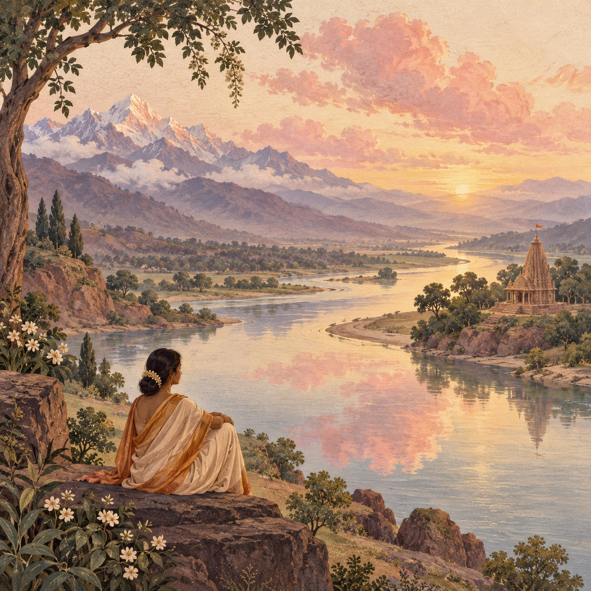

Memandang Yang Ilahi · 10:26
Pohon Suci
Krishna menyebut ashvattha di antara pepohonan saat melanjutkan contoh manifestasi ilahi.
Ringkasan editorial · Bukan terjemahan kitab suci
Pohon apa yang disebutkan?
Mari pahami
- Ashvattha, ara suci
Ashvattha adalah satu contoh dalam daftar vibhuti yang panjang. Penyebutannya tidak membuat pohon lain tidak layak dirawat.
Penjelasan editorial atas kutipan yang dirujuk
Pelajaran selesai
Sejenak merenung · Opsional
Pohon apa di dekatmu yang bisa kamu perhatikan lebih saksama?
Ini untuk Anda sendiri. Jawaban tidak dicatat atau dinilai.
Pratinjau ini tidak menyimpan kemajuan atau memindahkannya ke aplikasi.
Aplikasi iPhone memerlukan langganan tahunan. Harga yang ditampilkan App Store untuk wilayah Anda berlaku. Tanpa masa percobaan gratis.
Baca kutipan sumber
Bhagavad Gita 10:26
Konteks kutipan
Bab sepuluh menyajikan vibhuti, contoh manifestasi ilahi, diikuti permintaan Arjuna melihat wujud semesta dalam bab sebelas. Gambaran teologis ini bagian dialog Gita. Ilustrasi simbolis aplikasi bukan gambaran kanonis dewa atau rekonstruksi penglihatan itu.
Ringkasan dan penjelasan adalah catatan belajar asli, bukan terjemahan kitab suci. Penafsiran dapat berbeda antartradisi.
Sanskrit text: gita/gita contributors, pinned edition c6fce39595445768876ddbb8d1268a9c935e1d2b. Original Swastiastu learning notes are separate from scripture.
Public-domain Sanskrit; repository distributed under the Unlicense. See GITA-NOTICE.txt and GITA-UNLICENSE.txt.
Situs sumber